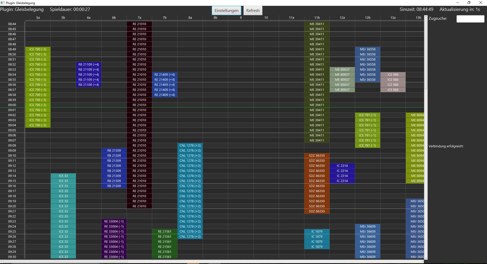
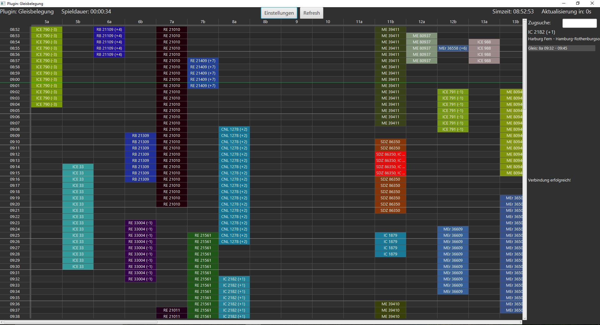
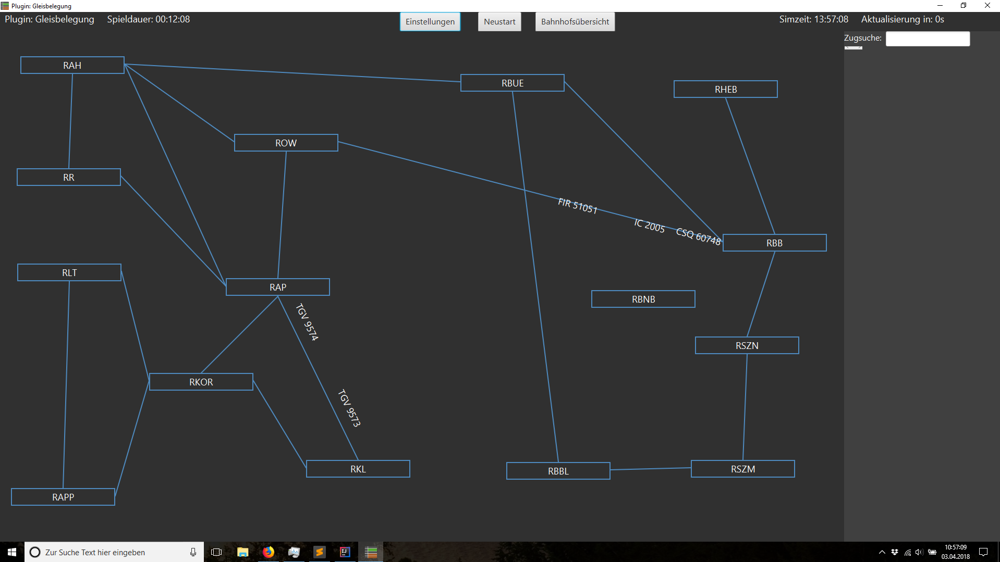
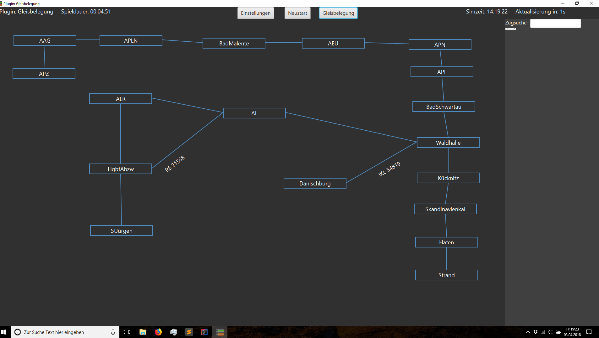
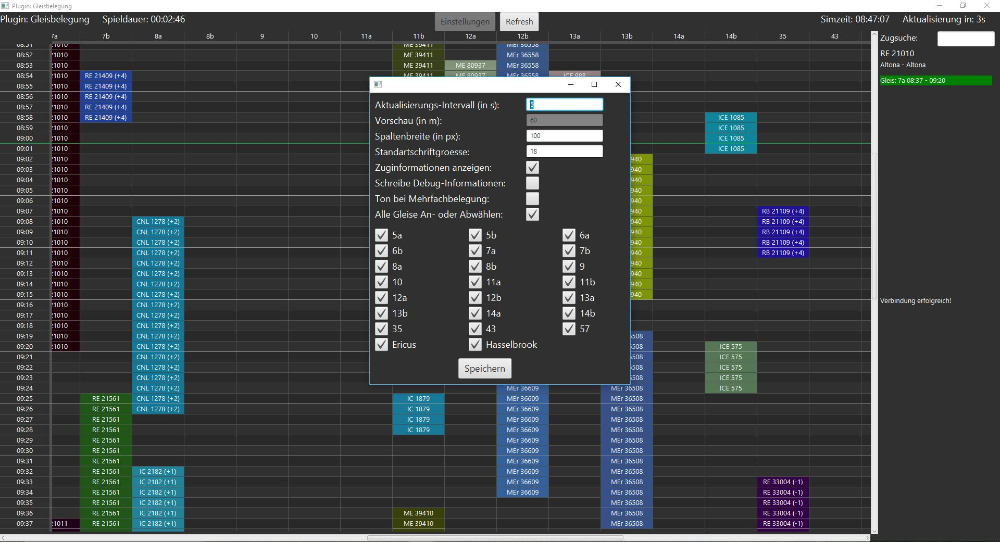

Plugin: Gleisbelegung
Hi, schön das du hierher gefunden hast. Auf dieser Webseite stelle ich dir mein Plugin vor. Wobei, um ehrlich zu sein ist es nicht mehr mein Plugin, sondern unseres. Ab jetzt kann nämlich jeder der möchte an dem Plugin mithelfen. Mehr Infos dazu gibt es hier. Wenn du auf dieser Seite landest, hast du vermutlich im STS-Forum mitbekommen, dass es hier irgendetwas zu gucken gibt. Da es mir immer etwas schwerfällt genau zu beschreiben, was das Plugin macht habe ich mich dazu entschieden erst einmal Bilder sprechen zu lassen. Ein kleiner Hinweis noch am Rande: Ich versuche die Bilder immer halbwegs aktuell zu halten, was mir nicht immer gelingt.
Das erste Bild zeigt eine Gleisbelegung aus Hamburg HBF. Auf der linken Seite sieht man die geplanten Haltezeiten der Züge (inklusive Verspätungen). Auf dem viel kleineren rechten Teil sind weitere Details zu dem Zug, auf welchem sich die Maus gerade befindet oder befand ersichtlich.
{kind=link}
Sollte es zu Überschneidungen kommen, werden diese wie im zweiten Bild zu sehen rot markiert. Mit der neuen Version besteht auch die Möglichkeit, sich über einen Sound darüber benachrichtigen zu lassen. Darunter befindet sich ein Abschnitt, der dich darüber informieren wird, wenn es zu Problemen im Programm kommt, und ein Zug beispielsweise nicht dargestellt werden kann.
{kind=link}
Nun folgen noch zwei Bilder zu einer später implementierten Funktion: Der Stellwerksübersicht. Sie stellt die Verbindungen der einzelnen Bahnhöfe dar, und zeigt den geschätzten Standort des Zuges
 {kind=link}
{kind=link}
In diesem letzten Bild siehst du nun noch alle möglichen Einstellungen. (Leider musste ich eine Funktion mindestens Zeitweise deaktivieren) Ich hoffe, dass alle Einstellung selbsterklärend sind, ansonsten immer gerne Fragen.
{kind=link}
Anregungen, Wünsche und Fehler gerne im Forumsthema, oder als
private Nachricht.
Einen letzten Hinweis muss ich aber noch
loswerden. Die Datei, die du gleich downloadest, ist eine
ausführbare Java-Datei. => Jeder der STS spielen kann, kann
auch das Plugin benutzen.